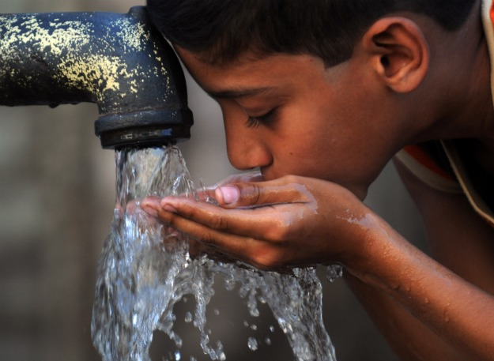
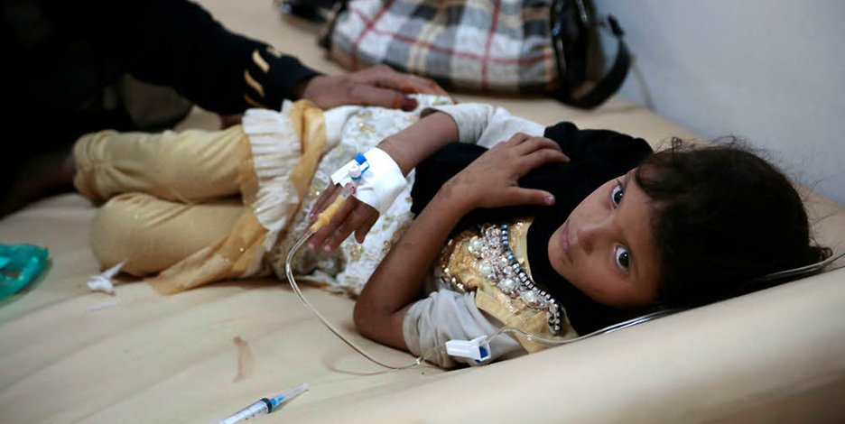

International Council of Clean Water (I.C.O.C.W)
Home
News
Info
About
Sources
1 / 3

Pictures of contaminated water and the people who were affected by it
https://www.berliner-zeitung.de/politik/jemen--die-schlimmste-cholera-epidemie--die-je-dokumentiert-wurde--28024276
2 / 3
Pictures of contaminated water and the people who were affected by it
https://medlineplus.gov/cholera.html
3 / 3

Pictures of contaminated water and the people who were affected by it
❮
❯